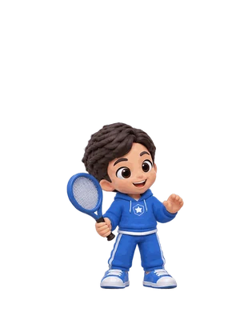
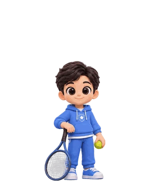
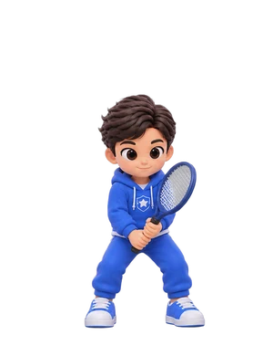
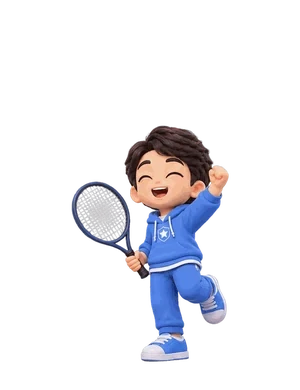
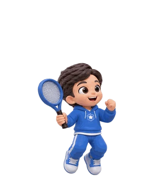

Belajar tenis langkah demi langkah bersama Kak Adam — dari bola merah sampai pertandingan pertamamu!

Latihan 1


Diberikan kepada
sudah menyelesaikan latihan bola merah, oranye, dan hijau, lalu bertanding dengan sportif. Masya Allah!